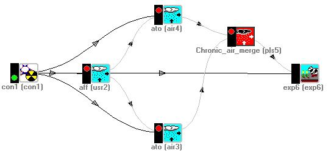
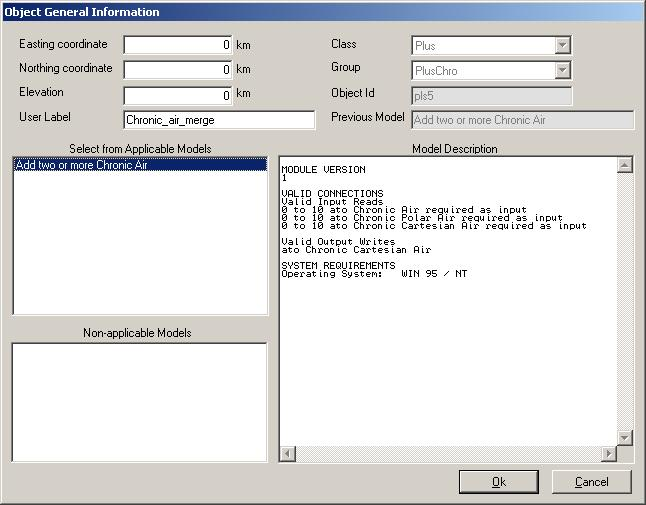

As you can see, you connect all ATO modules of the same release type
(chronic or acute) as inputs to the ATO plus operator (in this case
it's actually a chronic ATO plus operator. The output is one
cartesian grid: the result of the superposition and union of all
input grids.

This shot illustrates that you can input all chronic ato, whether
cartesian or polar or linear. However, this particular module will
convert all input to cartesian grids.

This is just an example of what I have so far. Please keep in mind
that module names can change. I'm not sure yet if there will be four
ATO modules for each combination of Chronic/Acute and
Polar/Cartesian, or if it will be simplified into two modules for
just Chronic/Acute.